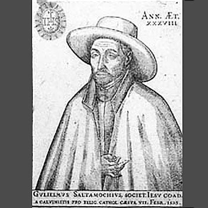

Isusovački blaženici
Brat
Bl. Vilim Saultemouche
1557. – 1593.
Blagi isusovački brat pratio je oca Jakova Salèsa na propovjedničkoj misiji u Aubenasu. Ostao je uz njega u opasnosti i podnio zajedničko mučeništvo.
Tekst je preveden i prilagođen uz pomoć umjetne inteligencije.

Izvor slike
- Spomendan
- 19. siječnja
- Zaštitništvo
- Nije navedeno u izvoru
- Životni vijek
- 1557. – 1593.
- Djelovanje
- Misije i evangelizacija · Euharistija i pobožnosti · Mučeništvo
- Razdoblje
- 16. stoljeće
- Podrijetlo
- Francuska
- Služba
- Vratar u Pont-à-Moussonu
- Rođenje — dostupni podaci
- 1557.; dan i mjesec nisu potvrđeni u provjerenom izvoru.
- Mjesto rođenja
- Francuska
- Datum smrti
- 06.02.1593.
- Mjesto smrti/mučeništva
- Aubenas, Ardèche, Francuska
- Okolnosti smrti/mučeništva
- Ubijen ubodima nakon odbijanja da napusti Jakova Salèsa.
- Uloga
- Brat
- Mučenik
- Da
- Ostale oznake
- Vratar; misionarski pratitelj Jakova Salèsa
- Pripadnost
- Isusovac
- Razlike u izvorima
- Datum smrti u podatcima zbirke: 06.02.1593. Raniji biografski izvor navodi 07.02.1593. Razlika izvora nije razriješena.
- Drugi oblici imena
- Guillaume Saultemouche · Guillaume (William) Saultemouche · Guillaume
Životopis
Guillaume Saultemouche rođen je 1557. Kao redovnički brat Družbe Isusove služio je na vratima kolegija u Pont-à-Moussonu. Njegov životopis ističe jednostavnost i blagost zbog kojih je izabran za pratioca svećeniku Jacquesu Salèsu na pučkoj misiji u Aubenasu. Obojica su njegovali pobožnost prema Euharistiji, a Saultemouche je često molio pred Presvetim Sakramentom.
Aubenas je bio grad obilježen sukobima katolika i hugenota. Baron od Montréala zatražio je propovjednika koji bi mogao razjasniti katolički nauk. Salès je misiju započeo krajem studenoga 1592., objašnjavajući vjeru bez vrijeđanja protestanata. Nakon obilaska okolnih mjesta dvojica su se redovnika vratila 5. veljače 1593., kada su se napetosti ponovno pojačale.
Protestantske su snage zauzele grad i zatočile isusovce. Francuski provincijski prikaz povezuje njihovo mučeništvo s raspravom o Euharistiji i nasiljem koje je uslijedilo. Saultemouche je dijelio sudbinu svojega suputnika kao redovnički brat; propovijedanje i teološka rasprava u izvorima pripadaju Salèsu. Obojica su u Aubenasu podnijela mučeništvo 1593., a Pio XI. proglasio ih je blaženima 1926. Crkva ih zajednički pamti kao svećenika i brata čija su se različita poslanja susrela u istoj misiji.
Tekst je preveden i prilagođen uz pomoć umjetne inteligencije.
Pročitaj više na izvornoj stranici ↗